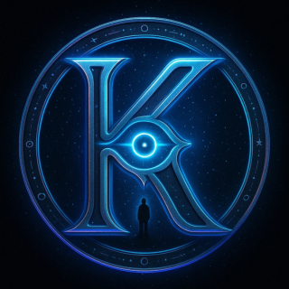

02 / HUMAN IMPACT
Colour Blindness in Football
Awareness and educational resources exploring how colour vision differences can affect players, coaches and families.
Discover the project →THE PERSON BEHIND THE PROJECTS
I turn ideas into things you can explore — learning tools, awareness projects, websites, music, art, books and invention concepts.
01 / FEATURED CREATION
Learn Spanish by starting with the English you already know.
An interactive learning experience built around familiar word patterns, simple lessons, practice and play. See a connection, understand it, then use it.
Learning · Language · Interactive design

Start with what
you already know.
SELECTED PROJECTS
Real projects you can visit. Every creation has its own story, purpose and next step.
02 / HUMAN IMPACT
Awareness and educational resources exploring how colour vision differences can affect players, coaches and families.
Discover the project →
03 / BUSINESS
Website creation and experiments in search visibility, digital marketing and practical AI tools.
Explore KRONATRIX →04 / MUSIC
Original song concepts and AI-assisted music, openly labelled so listeners know how it was made.
Explore the music →05 / BOOKS
Explore ideas in psychology, personal growth, business and life through ebooks developed with AI writing assistance.
Browse the collection →06 / APPS
A digital workspace exploring content strategy, performance insights and social-media growth.
Explore the app →BEYOND THE SCREEN
Physical art, music, sport and moments from life — shown in a tighter, easier-to-browse gallery.
CURIOUS BY NATURE
Not everything I imagine is a finished product. Some of my most interesting work starts as a question, an invention concept or an early experiment.
THE PERSON BEHIND IT ALL
I'm Cornelius Aurelius. I'm interested in ideas worth exploring, whether that's a learning tool, an awareness project, a piece of music, a painting, a business experiment or a new way of looking at something.
This site is a home for what I've made, what I'm learning and what I'm still figuring out. Some projects are finished; others are evolving.
More about meEVERYTHING IN ONE PLACE
Search projects, experiments, publications and everything in between.
317 entries in the directory
A complete catalogue of published sites, ideas, experiments, AI assistants and research records. Some are works in progress; research frameworks are exploratory rather than validated scientific discoveries.
Linked GPT
Linked GPT
Linked GPT
Linked GPT
Linked GPT
Linked GPT
Linked GPT
Linked GPT
Linked GPT
Linked GPT
Linked GPT
Linked GPT
Linked GPT
Linked GPT
Linked GPT
Linked GPT
Linked GPT
Linked GPT
Linked GPT
Linked GPT
Linked GPT
Linked GPT
Linked GPT
Linked GPT
Linked GPT
Linked GPT
Linked GPT
Linked GPT
Linked GPT
Linked GPT
Website · AI-Universal-Workspace
Website · ai.iq
Website unavailable
Website · bluxabi
Website · book-to-gpt-builder
Website · Book-Custom-GPT-Builder
Website · Books-to-AI-BOOK-CHATS
Website unavailable
Website · cornelius-aurelius-beta-reader
Website unavailable
Website unavailable
Website · ETHICS-HELPER
Website · instant-cover-letter
Website · instant-expert-neon
Website · just-get-skills
Website · millionaire-habit-builder
Website unavailable
Website · brain-training-arena-pro
Website unavailable
Website · Omniscientrix-vOmega-Autopilot
Website · permissionos
Website · QuantumAurora-Prime
Website · QuantumCortex_RealTime_AI_Atlas
Website · Speculative-Museum-of-Impossible-Ecosystems
Website · AIAutomationTitan
Website · life-decision-matrix-pro
Website · mood-tracker-pro
Website · should-i-buy-this-pro
Website · resume-analyzer-instant
Website · study-planner-pro
Website unavailable
Website · Viral-Lyrics-Generator
Website · neon-block-flip
Website · neon-orbit-singularity
Website · NEON-SKYRAIL
Website · Omniscientrix-Arcade-
Website · reality-breaker
Website · AI-ART
Website · Cornelius-Fitness-Equilibrium
Website · GIFTS-FOR-OMNI
Website · SPENCER-AURELIUS
Website unavailable
Website · Why-Do-I-Pick-the-Wrong-Men_-Written-by-an-Attractive-Narcissist
Website · BECOME-WORTH-PAYING-BOOK
Website · Become-Worth-Paying
Website · COLOUR-BLINDNESS-IN-FOOTBALL
Website · CORNELIUS-AURELIUS-EBOOK-LIBRARY
Website · CORNELIUS-AURELIUS-EBOOKS
Website unavailable
Website · BOOKS--
Website · HARD-TO-REPLACE-How-to-Stay-Valuable-Multiply-Your-Output-and-Win-in-the-Age-of-AI
Website · HIGH-SIGNAL-How-to-Read-People-Situations-and-Yourself-Before-It-Costs-You-Years-Ebook
Website · JUST-GET-SKILLS-EBOOK
Website unavailable
Website · PROOF-IS-KING
Website · PROOF-IS-KING-EBOOK
Website · RICH-YIN-POOR-YANG-EBOOK
Website · Take-What-You-Want
Website unavailable
Website · The-Continuation-Code
Website · THE-EQUILIBRIUM-CODE-How-to-Diagnose-Misalignment-Reduce-Drift-and-Build-a-Life-That-Fits-Ebook
Website · THE-FLOW-STATE-FOOTBALLER
Website · THE-IDENTITY-PARADOX-EBOOK
Website · THE-IMAGINATION-BOOK
Website · The-Invisible-Tax-Ebook
Website · THE-NUMB-ACHIEVER-EBOOK
Website · The-Systems-for-Personalised-Equilibrium-Ebook
Website · The-Un-Psychologist-Psychology-Without-Permission
Website · Attractive-Narcissist
Website · WHY-YOU-KEEP-CHOOSING-THE-WRONG-PEOPLE
Website unavailable
Website · ZERO-TO-ONE-EBOOK
Website · Sponsor-the-Hidden-Player
Website unavailable
Website unavailable
Website unavailable
Website · COLOUR-BLIND-21
Website · COLOUR-BLINDNESS-GAMING-HUB
Website · colour-blindness-in-football-project
Website unavailable
Website · COLOUR-LIES
Website · I-Was-The-Hidden-Player
Website unavailable
Website unavailable
Website unavailable
Website unavailable
Website · Kit-Match-12
Website · Kit-Memory-12
Website unavailable
Website unavailable
Website · pass
Website unavailable
Website unavailable
Website unavailable
Website · SIGNAL-FIRST-COLOUR-LIES
Website unavailable
Website unavailable
Website unavailable
Website · TeamMate-Snap
Website · The-12-000-Pixel-Website---Cornelius-Aurelius---Colour-Blindness-in-Football-Awareness
Website unavailable
Website unavailable
Website unavailable
Website · ABOUT-CORNELIUS-AURELIUS
Website unavailable
Website unavailable
Website · Certified
Website · CORNELIUS-AURELIUS
Website unavailable
Website unavailable
Website unavailable
Website unavailable
Website · Project-Nexus-Hub
Website unavailable
lim(r → 0) δJ/δr = 0
Website unavailable
∮ Φ_info · dl = 0
Website unavailable
v_I < c_local
Website unavailable
∂²A/∂t² = −∇²A + λ|A|²A
Website unavailable
S = k_A A
Website unavailable
G_A = G(1 + ηA²)
Website unavailable
∂A/∂t = κ ∂S_info/∂t
Website unavailable
Gμν = 8πG(Tμν + Ξ_info)
Website unavailable
Λ_info = Λ_0 + 8πG β⟨D_KL⟩
Website unavailable
P_info = −∂J/∂V
Website unavailable
R_info = R + 16πG β D_KL(P||Q)
Website unavailable
ρ_info = ∇·(A ∇D_KL)
Website unavailable
∂S_info/∂t = −∇·(Φ_A)
Website unavailable
Rμν − ½gμνR = 8πG[Tμν + α∇∇D_KL − βg D_KL + η ∂A ∂A]
Website unavailable
p = ∇J
Website unavailable
h_eff = h + α ∂A ∂A
Website unavailable
A_EH(r) ∼ r^{D_f}, D_f < 2
Website unavailable
J_inner = J_outer*
Website unavailable
C_phase = ⟨e^{iΔφ}⟩
Website unavailable
P_info = ∇I × ∇A
Website unavailable
P_info = σ T_H⁴ (1 + αA)
Website unavailable
δJ_surf = δ(∮ A·dS) = 0
Website unavailable
∇μ∇ν D_KL = λ ∂μA ∂νA
Website unavailable
D_KL ↔ λA
Website unavailable
∂G/∂A ≠ 0
Website unavailable
δJ_collapse + δJ_emit = 0
Website unavailable
dI/dt = 0
Website unavailable
I_lost = I_reemerged
Website unavailable
Ṙ_info = γ Ṙ_A
Website unavailable
δ²J/δt² = 0
Website unavailable
δJ = 0
Website unavailable
C_{ΩH} = D_KL(P_emit‖P_abs)
Website unavailable
δJ ≈ 0 at the event horizon
Website unavailable
I = (Mc²) / (k_B T_H)
Website unavailable
lim(r→0) R_info = finite
Website unavailable
dA/dt ∝ −dI/dt
Website unavailable
τ_info = r × ∇A
Website unavailable
ψ ↔ D_KL(P||Q)
Website unavailable
f_res = √(k/m)
Website unavailable
δJ = 0 across coupled sectors
Website · AI.BOOKS
Website · INVENTIONS
Website · CORNELIUS-AURELIUS-INVENTIONS
Website · GLOVE
Website · Sonic-Brace
Website · StarBond-Headset-Explore-the-universe-together.
Website · WALK-WRAP
Website · KRONATRIX-MARKETING---CORNELIUS-AURELIUS
Website · KRONATRIX-Marketing-AI-Recommendation-
Website · KRONATRIX-AI
Website unavailable
Website · KRONATRIX
Website · KRONATRIX-MARKETING-GPTs
Website unavailable
Website · future-ai-marketing-Kronatrix
Website unavailable
Website unavailable
Website unavailable
Website · Awareness-Field-Laplacian-Decay
Website · Law-of-Informational-Curvature-Minimization
Website · Law-of-Informational-Entropy-Relaxation
Website · Law-of-Informational-Mass-Relaxation
Website unavailable
Website · Law-of-Informational-Wave-Flattening
Website · Law-of-Informational-Potential-Energy
Website · Informational-Shear-Damping-Law
Website · informational-smoothing-time-scaling-law
Website · KL-Diffusion-Collapse-Law
Website · Law-of-Informational-Curvature-Relaxation
Website unavailable
Website unavailable
Website unavailable
Website unavailable
Website · informational-curvature-minimization-law
Website · Informational-Curvature-Flux-Coupling-Law
Website · informational-curvature-shear-coupling-decay-law
Website · informational-dissipation-rate-decay-law
Website · informational-dissipation-rate-decay
Website · Informational-Divergence-Collapse-Law
Website unavailable
Website · Informational-Equilibrium-Restoration-Law
Website · informational-flux-dissipation-final-verdict
Website · informational-flux-curvature-interaction-damping-law
Website · informational-gradient-energy-decay-law
Website unavailable
Website unavailable
Website unavailable
Website · informational-harmonic-mode-decay-law
Website · Informational-Helmholtz-Decomposition-Stability-Law
Website · informational-hyperdiffusion-law
Website · informational-second-derivative-energy-collapse-law
Website · informational-second-order-stabilization-law
Website · Informational-Shear-Flux-Interaction-Coupled-Dissipation-Law
Website · informational-spectral-energy-redistribution-law
Website · informational-spectral-hyperattenuation-law
Website unavailable
Website unavailable
Website unavailable
Website unavailable
Website unavailable
Website unavailable
Website unavailable
Website · law_of_informational_gradient_minimization
Website · Law_of_Informational_Wave_Collapse
Website unavailable
Website · OMNISCIENTRIX-LAWS-
Website · Law-of-Informational-Self-Containment
Website unavailable
Website unavailable
Website unavailable
Website unavailable
Website unavailable
Website unavailable
Website unavailable
Website unavailable
Website unavailable
Website unavailable
Website unavailable
Website unavailable
Website unavailable
Website unavailable
Website unavailable
Research record · source title
Research record · source title
Research record · source title
Research record · source title
Research record · source title
Research record · source title
Research record · source title
Research record · source title
Research record · source title
Research record · source title
Research record · source title
Research record · source title
Research record · source title
Research record · source title
Research record · source title
Research record · source title
Research record · source title
Research record · source title
Research record · source title
Research record · source title
Research record · source title
Research record · source title
Research record · source title
Website unavailable
Website · omniscientrix-universe-research
Website unavailable
Website unavailable
Website unavailable
Website · omniscientrix-map
Website unavailable
Website · omniscientrix-universe-map-v2
Website unavailable
Website unavailable
Website unavailable
ai-art.html
books.html
drums.html
fitness.html
football.html
https://authors.kronatrix.co.uk/
concepts.html
https://kronatrix.co.uk/
https://marketing-gpts.kronatrix.co.uk/
paintings.html
piano.html
research.html
https://www.youtube.com/@AIMUSICbyCorneliusAurelius
No matches. Try another word or reset the filters.